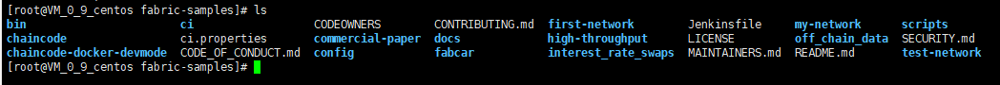
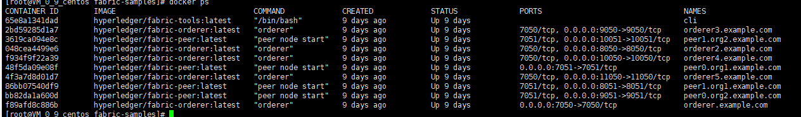

2. Hyperledger Fabric网络体验¶
2.1. 先决条件¶
在我们开始之前，如果您还没有这样做，您可能希望检查是否在要开发区块链应用程序和/或运行Hyperledger Fabric的平台上安装了以下所有前提条件。这里采用的是CentOS 7.6
[root@VM_0_9_centos ~]# cat /etc/redhat-release
CentOS Linux release 7.6.1810 (Core)
安装wget¶
yum install -y wget
Docker和Docker Compose¶
您将需要在Hyperledger Fabric上进行操作或进行开发的平台上安装以下组件：
MacOSX，* nix或Windows 10：Docker需要 Docker 17.06.2-ce或更高版本。
Windows的旧版本：Docker Toolbox-同样，需要Docker版本Docker 17.06.2-ce或更高。
通过执行docker --version 查看版本
[root@VM_0_9_centos ~]# docker version
Client: Docker Engine - Community
Version: 19.03.5
API version: 1.40
Go version: go1.12.12
Git commit: 633a0ea
Built: Wed Nov 13 07:25:41 2019
OS/Arch: linux/amd64
Experimental: false
Server: Docker Engine - Community
Engine:
Version: 19.03.5
API version: 1.40 (minimum version 1.12)
Go version: go1.12.12
Git commit: 633a0ea
Built: Wed Nov 13 07:24:18 2019
OS/Arch: linux/amd64
Experimental: false
containerd:
Version: 1.2.10
GitCommit: b34a5c8af56e510852c35414db4c1f4fa6172339
runc:
Version: 1.0.0-rc8+dev
GitCommit: 3e425f80a8c931f88e6d94a8c831b9d5aa481657
docker-init:
Version: 0.18.0
GitCommit: fec3683
2.2. Fabric网络体验¶
1、下载 Fabric samples¶
首先将fabric-samples clone到本地
git clone https://github.com/hyperledger/fabric-samples

2、生成秘钥及相关交易信息¶
cd到fabric-samples/first-network目录下，运行
./byfn.sh generate
该命令是用于生成fabric网络中的组件秘钥信息以及初始的交易信息。包括：ordering服务和节点的秘钥信息(msp和tls的证书)，ordering服务的创世块，管道配置交易信息(channel.tx)，和锚点的更新交易信息。
命令运行完成后，可以看到first-network下的crypto-config 和channel-artifacts文件夹下都新生成了一些文件。Channel-artifacts下是新生成的创世块和管道交易信息，以及锚点更新交易信息。Crypto-config里则是ordering 服务和节点相关的秘钥信息。
3、启动网络¶
./byfn.sh up
该命令启动了一个默认设置的网络，这些默认的设置包括：
channel名字为myChannel
cli的timeout时间为10s
延迟为3s
使用的docker-compose-file为docker-compose-cli.yaml
数据库类型为goleveldb
语言为go语言
使用最新的镜像启动网络
完整的命令如下：
./byfn.sh up –c myChannel –t 10 –d 3 –f docker-compose-cli.yaml –s goleveldb –l go –i latest
4、启动的流程为：¶
1)、创建四个节点
2)、创建了一个ordering服务
3)、创建了一个cli服务，为了下面可以使用 docker exec -it bash 进入到各个容器内。
4)、创建一个channel
peer channel create -o orderer.example.com:7050 -c mychannel -f ./channel-artifacts/channel.tx --tls true --cafile /opt/gopath/src/github.com/hyperledger/fabric/peer/crypto/ordererOrganizations/example.com/orderers/orderer.example.com/msp/tlscacerts/tlsca.example.com-cert.pem
5)、分别把四个节点加入到这个channel中
peer channel join -b mychannel.block
6)、之后更新这些加入到myChannel的节点所属的ordering服务已经msp信息
peer channel update -o orderer.example.com:7050 -c mychannel -f ./channel-artifacts/Org2MSPanchors.tx --tls true --cafile /opt/gopath/src/github.com/hyperledger/fabric/peer/crypto/ordererOrganizations/example.com/orderers/orderer.example.com/msp/tlscacerts/tlsca.example.com-cert.pem
7)、安装默认的chaincode到peer0.org2节点上
peer chaincode install -n mycc -v 1.0 -l golang -p github.com/chaincode/chaincode_example02/go/
8)、实例化chaincode
peer chaincode instantiate -o orderer.example.com:7050 --tls true --cafile /opt/gopath/src/github.com/hyperledger/fabric/peer/crypto/ordererOrganizations/example.com/orderers/orderer.example.com/msp/tlscacerts/tlsca.example.com-cert.pem -C mychannel -n mycc -l golang -v 1.0 -c '{"Args":["init","a","100","b","200"]}' -P 'OR ('\''Org1MSP.peer'\'','\''Org2MSP.peer'\'')'
9)、最后做了一步对链码的验证工作。
查询交易
peer chaincode query -C mychannel -n mycc -c '{"Args":["query","a"]}'
调用交易
peer chaincode invoke -o orderer.example.com:7050 --tls true --cafile/opt/gopath/src/github.com/hyperledger/fabric/peer/crypto/ordererOrganizations/example.com/orderers/orderer.example.com/msp/tlscacerts/tlsca.example.com-cert.pem -C mychannel -n mycc -c'{"Args":["invoke","a","b","10"]}'
到这里我们整个网络已经启动完成。这个时候可以看下运行的容器情况，通过docker ps可以查看到相关容器信息

至此，一个简易的fabric网络就搭建成功了。